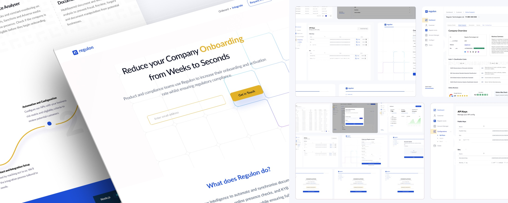

Regulon

Problem
Financial operations teams were abandoning KYB onboarding mid-flow, manual document review and unclear compliance steps created friction that eroded trust at the most critical moment.
What we tried first
The first design used a wizard flow, a step-by-step progress bar where each screen was isolated. Testing revealed that users wanted to see the full scope of what was required before starting, not be led through it blindly. We reversed the approach: show the whole journey upfront, let users jump between sections.
Process
Visit regulon.io →
- Rebuilt AML/KYC onboarding as a guided, step-aware flow, not a static form
- Simplified multi-step wallet and compliance workflows across web and mobile
- Built a reusable design system eliminating duplicate UI patterns across the product